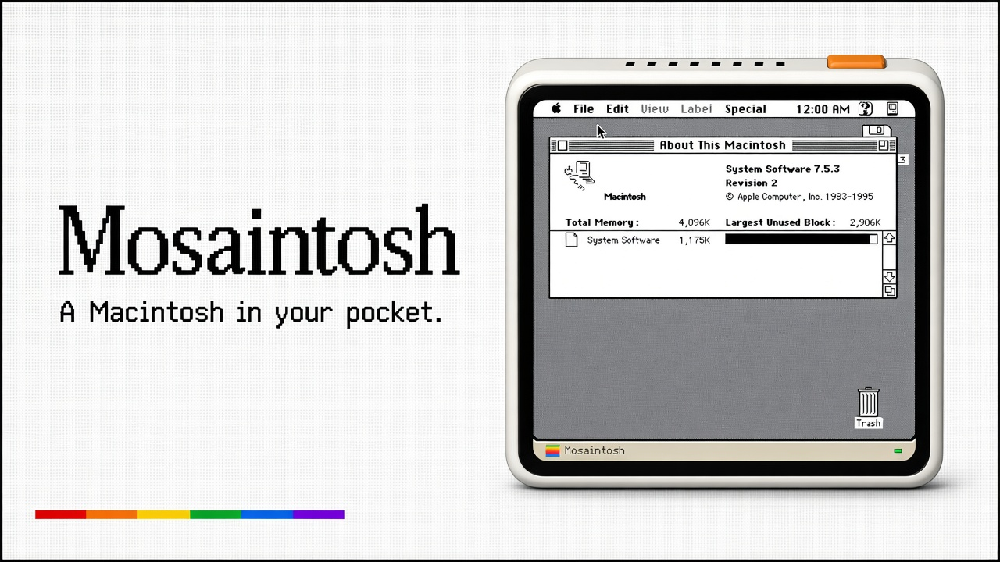
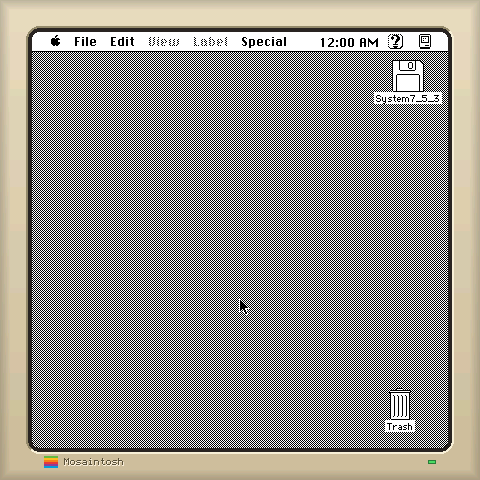
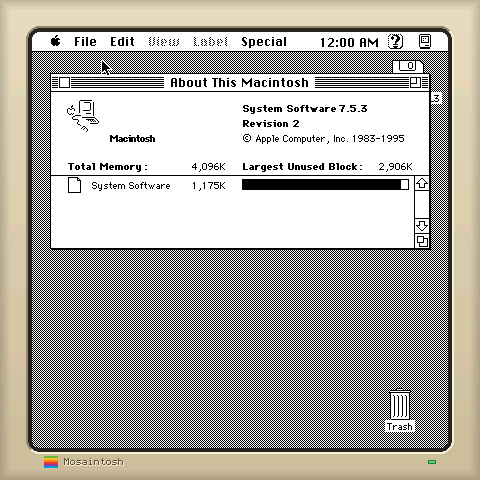

不是仿制界面
umac 与 Musashi 模拟完整 Macintosh Plus，启动你合法拥有的真实 ROM 和 HFS 系统盘。

Macintosh Plus · System 7.5.3 · ESP-Mosaico
真正的 Mac Plus ROM、真正的 System Software 7.5.3， 在 ESP32-S31 和 480×480 触摸屏上以实时速度运行。


umac 与 Musashi 模拟完整 Macintosh Plus，启动你合法拥有的真实 ROM 和 HFS 系统盘。
416×416 的 1-bit Mac 画面避开圆角；手指直接变成绝对定位鼠标。
固件原样运行在板级模拟器中，每次面板刷新都与 Mac 帧缓冲进行全屏对照。
The machine
Build it
make board
make board-window
python mosaico.py iris system-update \
--project projects/mosaintoshROM 与 System 7.5.3 镜像不在仓库中。请使用你合法拥有的副本。